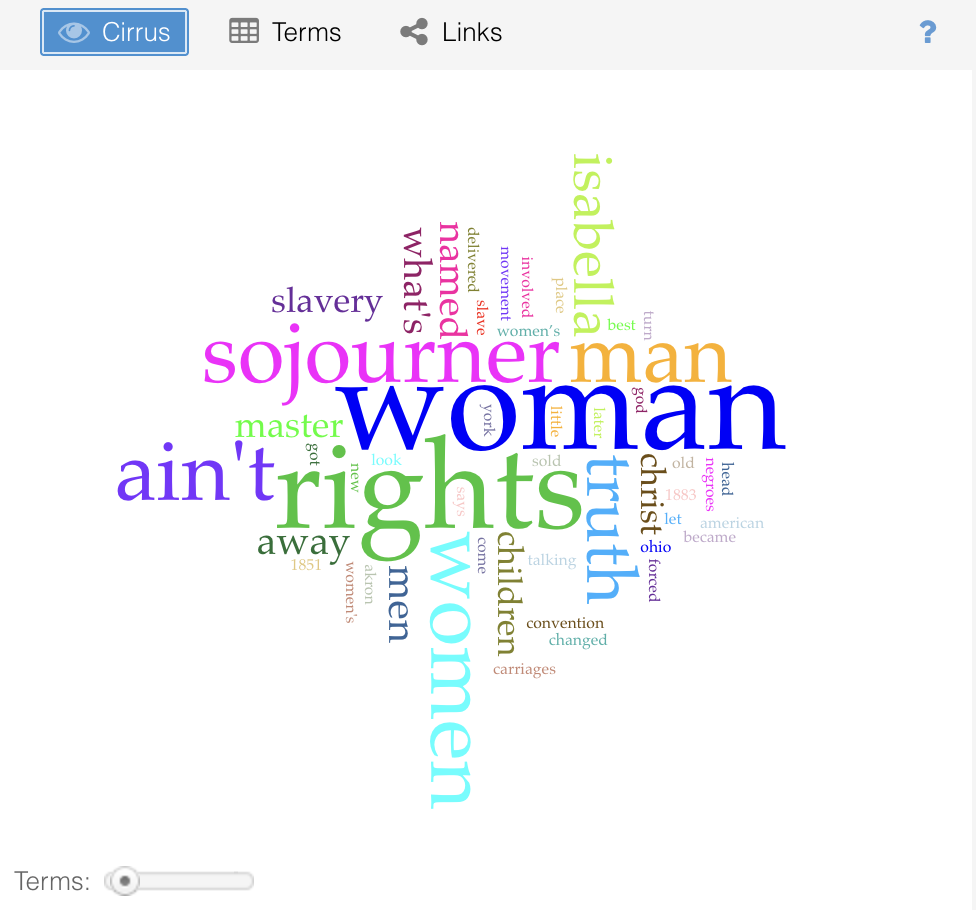
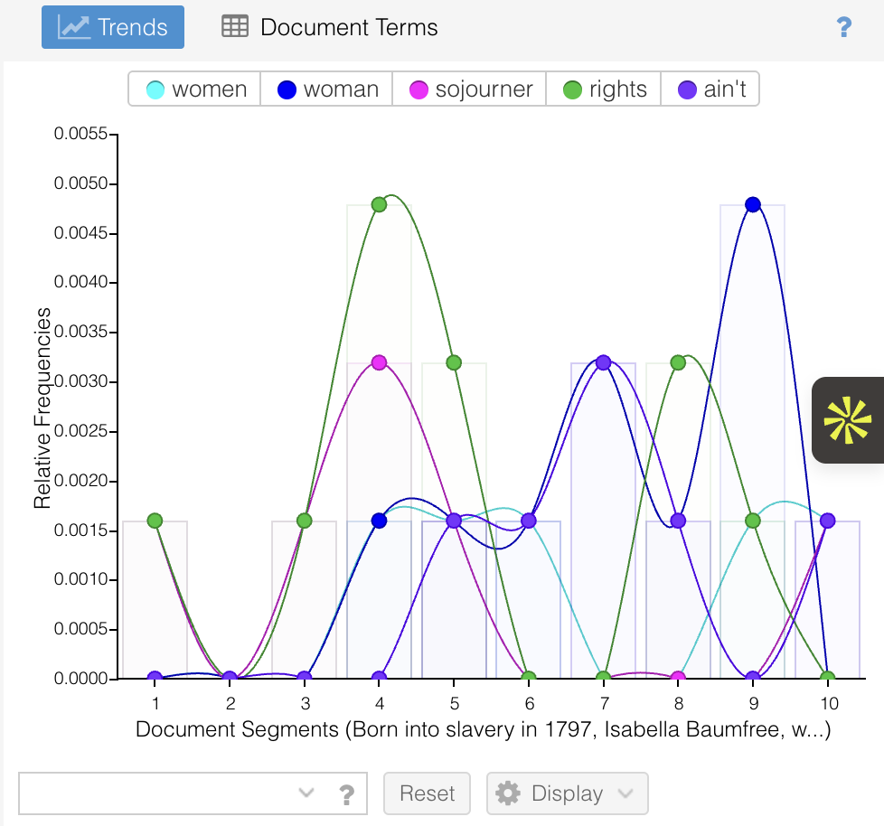

How two machines read Sojourner Truth differently
A comparative analysis examining how Voyant and ChatGPT read Sojourner Truth's "Ain't I a Woman?" and what different machines reveal (and obscure) about textual meaning.
Text Analyzed
Sojourner Truth, "Ain't I a Woman?" (1851 speech at the Akron Women's Rights Convention)
Voyant Analysis Summary


Preview of the analysis tools
These images show the Voyant Cirrus word cloud and trends graph that helped me compare machine reading with thematic interpretation.
Using Voyant, I examined word frequency, trends across segments, and the Cirrus word cloud. The most frequent words were: rights, woman, sojourner, ain't, women.
The repetition of "woman" and "rights" confirms that the speech centers on gender and political recognition. The trends view showed that "rights" peaks in the middle of the text, while "woman" increases toward the later segments, suggesting a shift from biography to direct argument. The word cloud visually amplified this emphasis.
What Voyant revealed: Word frequency makes structural emphasis visible. It quantifies repetition and shows how certain terms cluster in particular sections.
What Voyant obscured: It could not distinguish between irony, grief, or theological reversal. It showed patterns but not their force.
GPT Analysis Summary
Prompt: "Give me a literary analysis of the text." GPT produced a rhetorical and thematic interpretation discussing:
- Repetition and embodiment
- Intersection of race and gender
- Tone shifts and biblical references
- "Ain't I a woman?" as both logical challenge and moral confrontation
GPT interpreted the speech as a cohesive argument shaped by lived experience, reading it through the lens of human literary analysis. It talked about tone, irony, and impact—things Voyant's frequency counts cannot touch.
What GPT revealed: Thematic and rhetorical coherence. It organized themes, articulated connections, and reconstructed meaning at a human interpretive level.
What GPT obscured: It did not show how it derived those interpretations. Its authority comes from fluency rather than visible method. It performs understanding without demonstrating evidence.
Comparison
Voyant imagines meaning as measurable frequency and distribution. Importance equals repetition. Voyant is transparent but silent about significance.
GPT imagines meaning as coherence and theme. Importance equals interpretive synthesis. GPT is interpretive but opaque about process.
These are fundamentally different theories of what meaning is and where it lives. Voyant fragments text into data points. GPT reconstructs it into narrative. Human reading sits between them—it sees both pattern and force, evidence and meaning.
Reflection
This assignment made me realize that machines "read" according to their design. Voyant reads by counting and mapping. It assumes that meaning emerges from pattern density. This helps reveal emphasis and structure, especially in a speech built on repetition. But it flattens emotional intensity into data points. It cannot feel the grief in the line about children sold into slavery, nor can it recognize the strategic power of irony.
GPT reads by generating interpretation that resembles human literary analysis. It organizes themes and articulates connections across the text. This feels closer to classroom discussion. Yet it performs understanding rather than demonstrating it. It does not expose its evidence trail unless asked.
What we gain from machine reading is scale and speed. Patterns become visible instantly. What we lose is situated judgment. Neither tool experiences the historical weight of a formerly enslaved woman speaking in 1851. Meaning changes depending on method.
What remains true is that human reading—informed by method, evidence, and feeling—still decides why these patterns and arguments matter. The tools amplify our thinking. They don't replace it.
Attribution & AI Use
Text Source: Sojourner Truth, "Ain't I a Woman?" (1851, public domain)
Tools Used: Voyant Tools and ChatGPT
GPT Prompt: "Give me a literary analysis of the text."
Limitations Noted:
- Voyant: Cannot interpret tone, irony, or historical stakes
- GPT: Does not reveal reasoning process and may overgeneralize without textual prompting
Analysis & Conclusions: All comparative analysis, framing, and reflection are my own work. I used the tools to generate raw data and interpretation, then synthesized both into the comparative framework above.